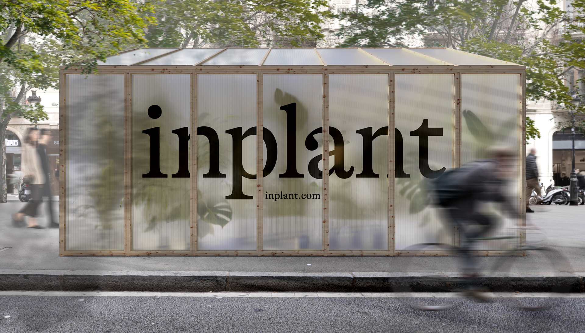
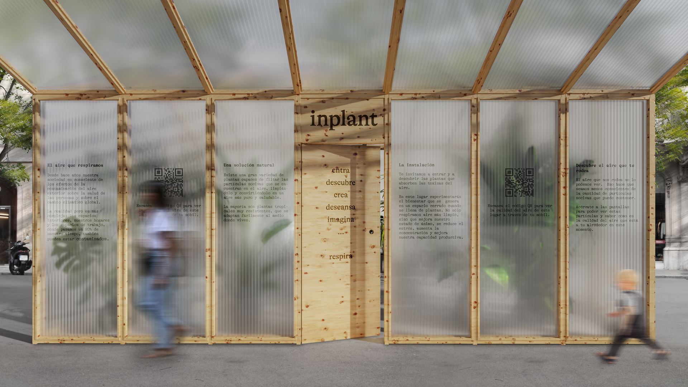
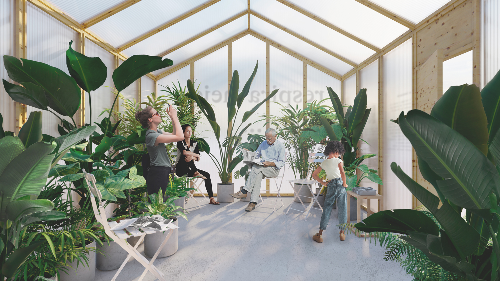

My name is Silvia and this is my portfolio: a multidisciplinary mix of graphic design,
code and motion. If I have to define myself by the things I have studied I am an environmentalist,
a graphic designer and I am currently learning p5js, a JavaScript library for creative coding.
I live in Barcelona and you can find out more about my studies and professional experience on my
Linkedin.
I won a Bronze Laus Award for the final master's project done at ELISAVA in 2020 and I am currently open to work.
contact: sdecastro11@gmail.com
626595940



inplant is a brand that shows the quality of the air we breathe.
Its aim is to raise awareness about the poor quality of the air that surrounds us, especially indoors, and
offers a renting of air purifying plants. This brand has been created for the
final master's project, carried out with Jonathan Rodríguez, during the Master in
Graphic Design 19/20 by ELISAVA. The aim of the project is to create and design the identity of a brand
that offers a solution to improve people's quality of life.